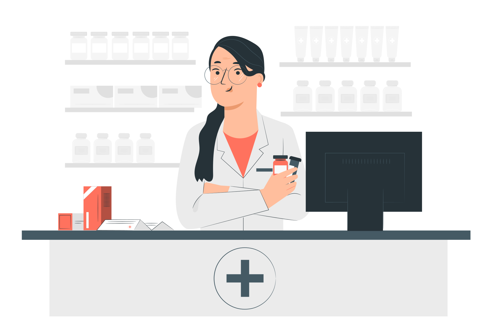

Garanta uma vida longa e cheia de alegria para o seu melhor amigo
A PetLife é o seu refúgio de confiança para o cuidado completo do seu pet. Com profissionais dedicados e serviços abrangentes, oferecemos uma experiência acolhedora e personalizada, garantindo o bem-estar, a saúde e a felicidade dos seus animais de estimação.
Marque uma consulta Conheça nossa clínicaCuidado Veterinário de Qualidade
Nossa clínica veterinária é o local onde a paixão pelos animais se une à excelência em cuidados veterinários. Sob a liderança da Dra. Vivien Reid, uma profissional altamente qualificada e comprometida, oferecemos serviços de saúde e bem-estar pra animais de estimação de todas as espécies. Venha conhecer nossa clínica e desfrute da atenção personalizada e do carinho do seu pet merece.
- Consultas de rotinas
- Vacinação
- Cirurgias
- Tratamento de doenças
- Cuidados odontológicos
- Programas de prevenção de pulgas
- Atendimento de emergência 24 horas
- Carrapatos e vermes
venha Conferir o nosso ptshop e farmácia
Além de ser uma clínica veterinária de confiança, também contamos com um completo petshop e farmácia. Nosso petshop oferce uma ampla seleção de produtos de alta qualidade, desde alimentos balanceados e petiscos delicosos até brinquedos divertidos e acessórios alegantes para seu pet. Na nossa farmácia, você encontrará uma variedade de medicamentos, produtos de cuidados e suplementos recomendados pelos nossos veterinários, garantindo que o bem-estar e a saúde do seu amado pet estejam sempre em boas mãos. Tudo o que você precisa para cuidar e mimar o seu pet está aqui, no nosso petshop e farmácia, com a mesma dedicação e qualidade que nos tornou referência na área veterinária.
Ficou alguma dúvida?
Quais serviços são oferecidos pela clínica da PetLife
A clínica da PetLife oferece uma ampla gama de serviços, incluindo consultas de rotinas, vacinação, cirurgias, tratamento de doenças, cuidados odontológicos, atendimento de emergência 24 horas, programas de prevenção de pulgas, carrapatos e vermes, entre outros. Nosso objetivo é fornecer cuidados abrangentes e personalizados para garantir a saúde e o bem-estar do seu pet.
Quais espécies de animais a clínica veterinária atende?
A clínica veterinária da PetLife atende animais de estimação de todas as espécies, incluindo cães, gatos, pássaros, roedores e répteis. Nossos profissionais possuem conhecimento e experiência para cuidar de digerentes tipos de animais, oferecemos um atendimento especializado e dedicado a cada um deles.
A clínica da PetLife possui serviçoes de emergência?
Sim, a clínica veterinária da PetLife oferece serviços de emergência 24 horas. Se o seu animal de estimação precisar de atendimento veterinário imediato fora de expediente, nossa equipe está pronta para ajudar, fornecendo cuidados urgentes e tratamento adequado para garantir o bem-estar dp seu pet.
A clínica oferece serviços de banho e tosa?
Sim, a clinica veterinária da PetLife oferece serviços profissionais de banho e tosa. Nossa equipe de profissionais experientes garante que seu pet receba cuidados adequados, usando produtos de alta qualidade e técnicas seguras. O banho e tosa ajudam a manter a higiene, a saúde da pele e pelagens do seu pet, além de proporcionar uma experiência relaxante e agradável para eles.